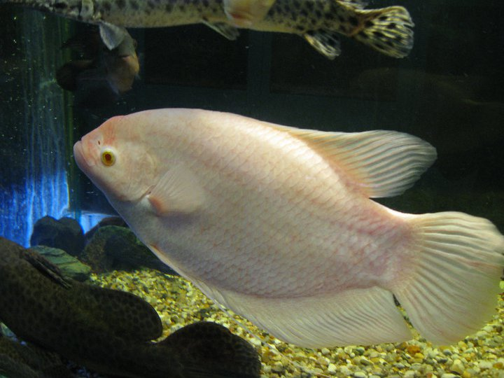
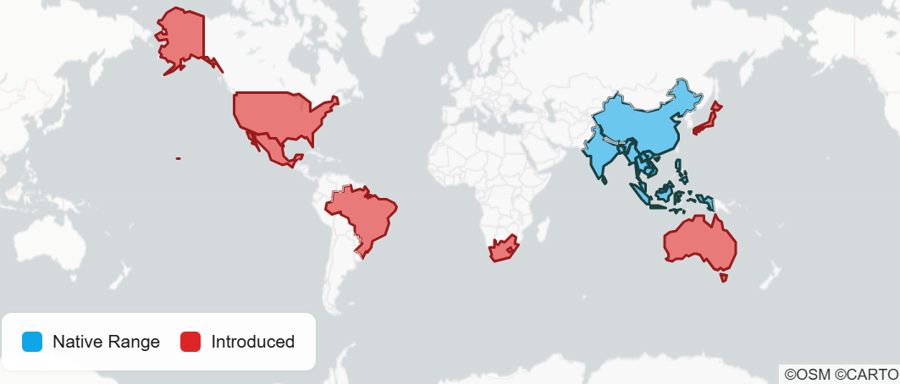

The Giant Gourami
Status/Conservation
- The giant gourami is listed as least concern regarding extinction.
Full Scientific Classification
- Also known as just gourami or known by the Osphronemus goramy.
- Kingdom: Animalia
- Subphylum: Vertebrata
- Phylum: Chordata
- Class: Actinopterygii
- Order: Perciformes
- Family: Osphronemidae
- Genus Species: Osphronemus
- Species: Osphronemus goramy
Physical Profile
- Typically 28" in length.
- Can come in a bunch of different colors such as pink, albino, black, golden, and red, but their color may change as they grow up.

Source: Branson's Wild World
Habitat & Geography
- These fish are native to the Southeast Asian countries of Java, Sumatra and Bornio.

Source: AZ Animals
Ecology & Behavior
Feeding & Diet:
- Gourami will usually eat algae-based foods but will also eat meaty foods like shrimp brine.
Behaviors and Adaptations:
Communication:
- Communicate using a mix of body language, touch, and low-frequency sounds.
Life History Cycle & Breeding Behaviors:
- Male gourami's builds a dense nest of bubbles and lure females over to it for mating. He then guards the eggs until they hatch a few days later.
- A giant gourami's life span typically ranges from 10 to 20+ years.
Predators:
- Giant gouramis are usually subject to being prey to any large aquatic predators or reptiles.